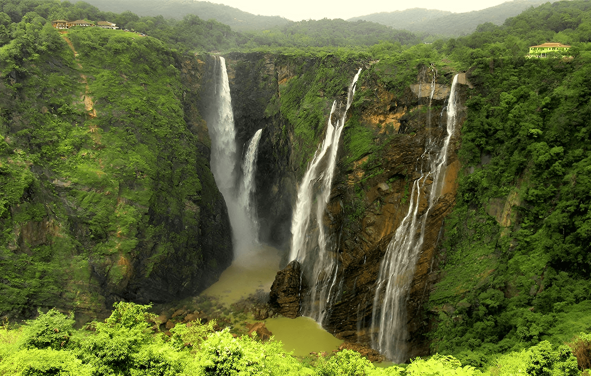
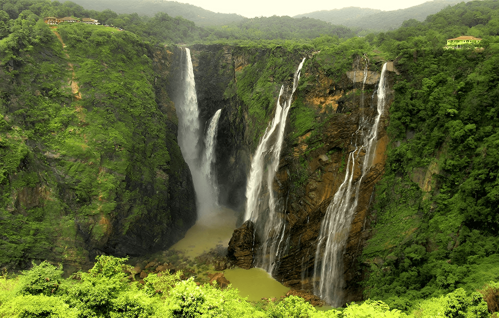
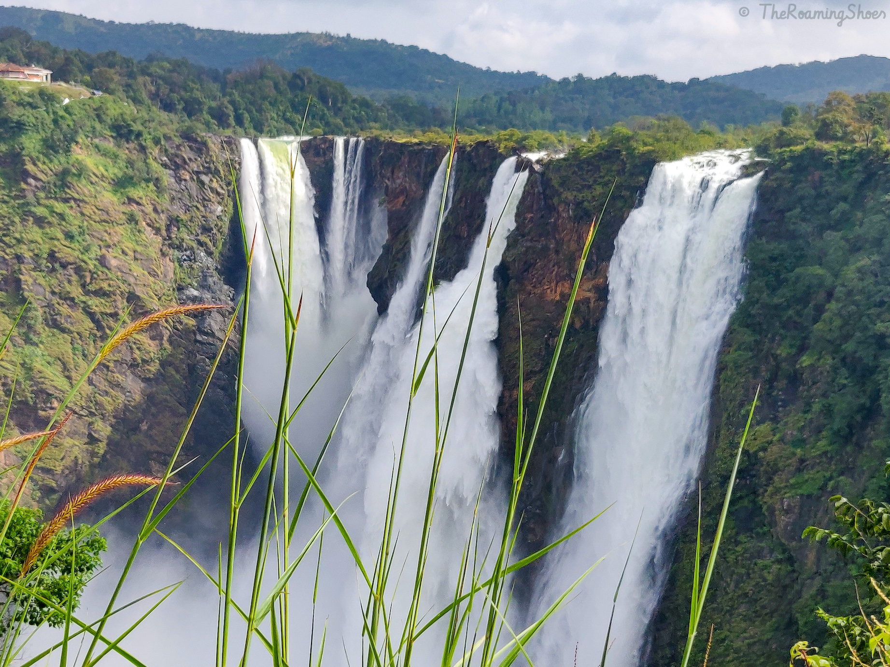
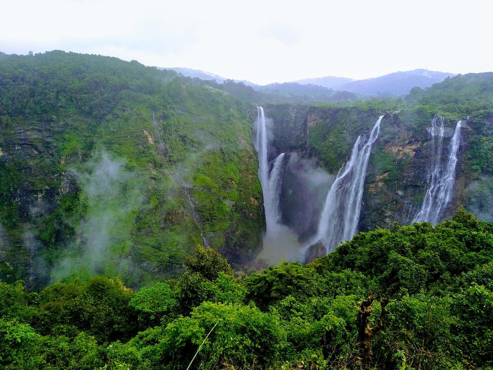
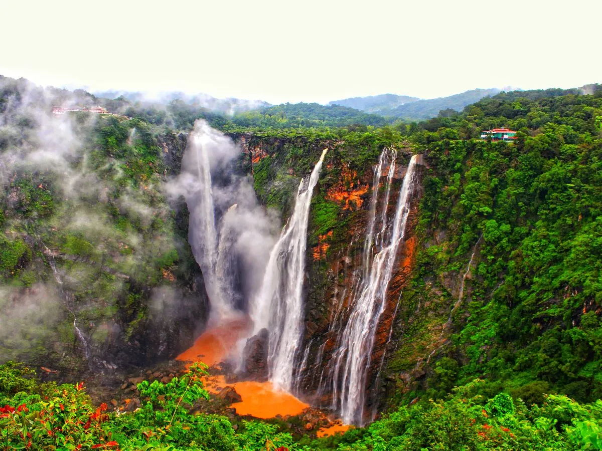
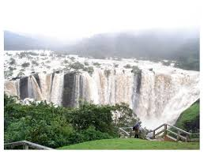
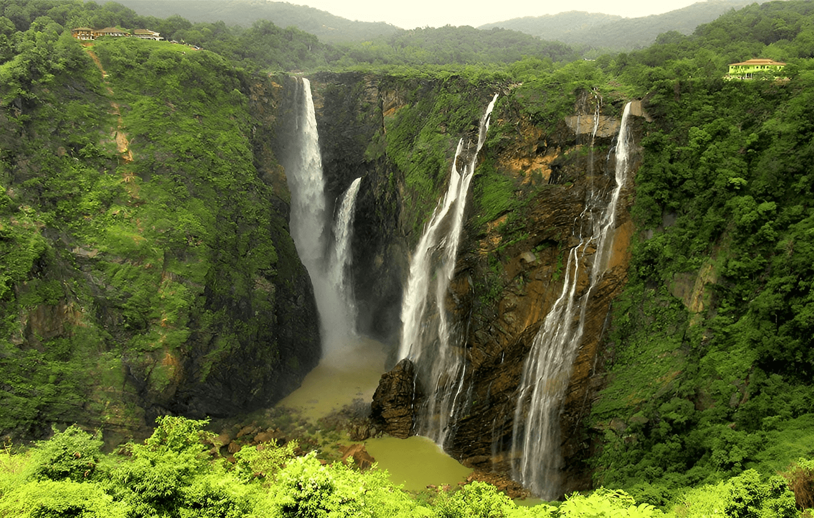

Jog Falls is created by the Sharavati river dropping 253 m (830 ft), making it the third-highest waterfall in India after the Nohkalikai Falls with a drop of 335 m (1,099 ft) in and the Dudhsagar Falls with a drop of 310 m (1,020 ft) in Goa. Sharavathi, a river which rises at Ambutirtha, next to Nonabur, in the Thirthahalli taluk takes a northwesterly course by Fatte petta, receives the Haridravati on the right below Pattaguppe and the Yenne Hole on the left above Barangi. Then, it bends to the west, precipitates itself down the Jog Falls (aka Gersoppa Falls), and passes the village of Gersoppa (properly Geru-Sappe), which is some 30 kilometres (19 mi) away, discharging into the Arabian Sea at Honnavar in Uttara Kannada.
